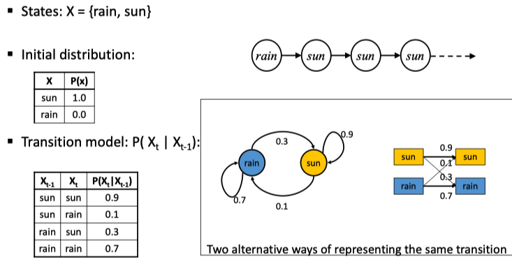
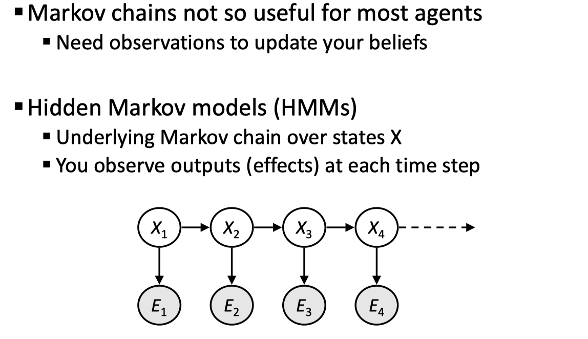
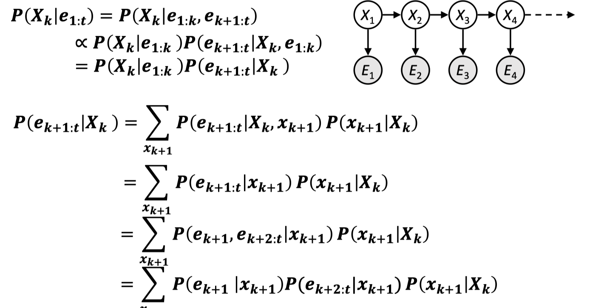
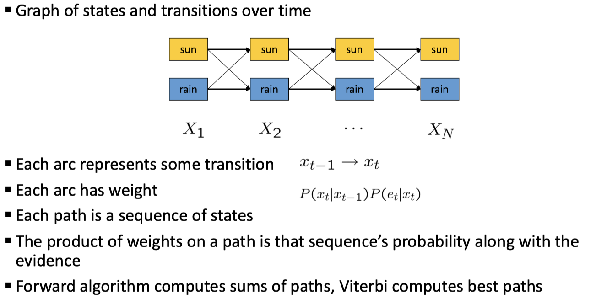
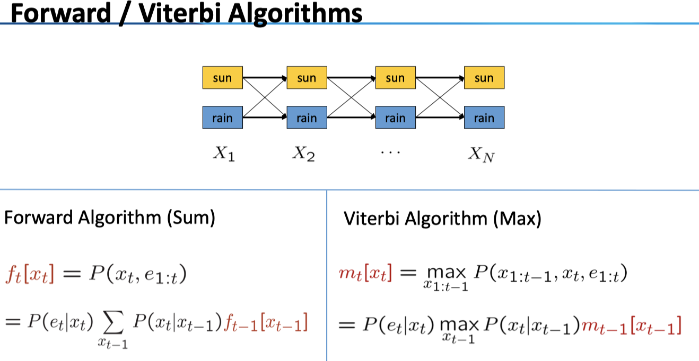

前面讲的 BN 是静态的概率推断，而在这里我们考虑在时间上的推移，并且网络的形式更为简单了。时间上的推断在实际中的应用非常广泛，如 Speech recognition, Robot mapping, Medical monitoring。
Markov Models
一个时间点的状态可能取决于前面的所有节点，而马氏模型的假设是该状态仅和前一时间点的状态有关。
\[
P(X_t|X_1...X_{t-1})=P(X_t|X_{t-1})
\]
马氏链的几个要素
- State: value of X at a given time
- Initial probabilities: the prior probability distribution of X
- Transition probabilities (dynamics): specify how the state evolves over time
对于转移概率，我们有静态假设 Stationary assumption: transition probabilities the same at all times
在这种情况下，我们容易得到一些有用的结论
给定 \(X_{t-1}\)， 则\(X_{t}\) 与\(X_1,...X_{t-2}\) 均独立；不仅如此，给定了present 状态，past 和 future 节点独立。
联合分布有
\[
P(X_1, X_2 , . . . ,X_T) = P(X_1)\prod _{t=2}^T P(X_t|X_{t-1})
\]
给出一个经典的 Weather 马氏链的例子，注意我们给出了很多种表示方法

对于一个马氏链，问题是给定了初始状态，求在时间 t 时的概率分布。为此，我们采用 variable elimination 的思路：因为在马尔科夫假设下仅与其上一个时刻的分布相关，因此我们若知道了\(X_{t-1}\) 的分布，可以容易得到
\[
P(𝑋_t) = \sum_{X_{t-1}}P(X_{t-1})P(X_T|X_{t-1})\tag{1.1}
\]
因此，可以递归求解，从\(X_1\) 计算到 \(X_t\) 。
马氏链的另一个重要概念是 Stationary Distributions：对于多数的马氏链来说，在一定的转移概率下，初始状态的影响越来越小，最终会收敛到一个固定的分布（仅与转移矩阵有关），这一稳定分布满足
\[
P_{\infty}(X)=P_{\infty+1}(X)=\sum_xP(X|x)P_\infty(x)
\]
例子：在 Weblink analysis 中，1. 我们把每个网页看成 state；2. 初始状态可以赋为 1；3. 转移矩阵：以一定的概率 c 随机跳转到任一网页上，在其他情况下以一定的分布连接到其他 state（例如按照链接关系）——那么，此马氏链的 stationary distribution 正是 PageRank 的结果。
Hidden Markov Model
在普通的马氏链中，没有证据变量 E，我们只是建立了一个模型，因此并没有太多的实际用处，Need observations to update your beliefs；在 HMM 中，我们加入了这些观测值，从而提升了模型的模拟能力。

给出一些案例：在 Speech recognition HMMs 中，观测 E 是 acoustic signals (continuous valued)，而状态 X 则是 words (so, tens of thousands)；在 Machine translation HMMs 中，观测是 words (tens of thousands)，状态是 translation options；在 Robot tracking 中，观测是 range readings (continuous)，而状态是 positions on a map (continuous)。我们不断通过观测来提升我们对于状态的 belief。
给出 HMM 的定义：HMMs defined by
- States \(X\)
- Observations \(E\)
- Initial distribution \(P(X_1)\)
- Transitions \(P(X|X_{-1})\)
- Emission \(P(E|X)\)
类似于马尔可夫模型，我们有如下的性质：
联合分布。
\[
P(X_1,E_1,...,X_T,E_T)=\\P(X_1)P(E_1|X_1)\prod_{t=1}^TP(X_t|X_1E_1...X_{t-1}E_{t-1})P(E_t|X_1E_1...X_{t-1}E_{t-1}X_t)\tag{1.2}
\]条件独立性。这里所有的三元组都可以三成是一条链，因此阻断了\(X_t\)，那么 past 和 future 之间，以及相应的观测 E 之间都是独立的。
对于一个 HMM 模型来说，我们有以下任务：
Filtering: \(P(X_t|e_{1:t})\)
Computing the belief state—the posterior distribution over the most recent state—given all evidence to date.
Prediction: \(P(X_k|e_{1:e})\)
Computing the posterior distribution over the future state, given all evidence to date.Smoothing: \(P(X_k|e_{1:t})\)
Computing the posterior distribution over a past state, given all evidence up to the present.Most Likely Explanation ： \(\arg\max_{x_{1:t}} P(X_{1:t}|e_{1:t})\)
Given a sequence of observations, find the sequence of states that is most likely to have generated those observations.
Filtering
显然，对于所有的问题我都都可以通过（1）式进行消元得到，而这里的推导是为了方便计算，以及帮助我们理解 HMM 的逻辑。先定义我们对于某一 state 的分布的 belief（这里的 evidence 是\(e_{1:t}\)，也可以是其他的 evidence），即我们在给定了一些观测的情况下对于状态 t 所能做出的推断（推断其分布）。
\[
B(X_t)=P(X_t|e_{1:t})
\]
- Passage of Time
这是第一步，在观测 \(e_{1:t}\) 之下，我们已知了对于 \(X_{t}\) 的 belief，而要根据 HMM 上时间的推移去得到 \(X_{t+1}\) 的 belief。有
\[
\begin{align}
P(X_{t+1|e_{1:t}})=\sum_{x_t}P(X_{t+1}x_t|e_{1:t}) \\
=\sum_{x_t}P(X_{t+1}|x_te_{1:t})P(x_t|e_{1:t}) \\
=\sum_{x_t}P(X_{t+1}|x_t)P(x_t|e_{1:t}) \\
\end{align}
\]
亦即
\[
B'(X_{t+1})=\sum_{x_t}P(X'|x_t)B(x_t)\tag{2.1}
\]
看（2.1）式：我们基于对 \(X_t\) 的 belief，通过条件概率进行更新 \(X_{t+1}\) 的 belief。这里的式子和 Mini-forward algo 中是一样的（式（1.1））。
- Observation
这是下一步，我们得到了新的观测 \(x_{t+1}\)，来对于先验 prior \(B'(X_{t+1})=P(X_{t+1}|e_{1:t})\) 进行修正，得到 posterior
\[
P(X_{t+1}|e_{1:t+1})={P(X_{t+1},e_{t+1}|e_{1:t})\over P(e_{t+1}|e_{1:t})}\\
\propto_{X_{t+1}}P(X_{t+1},e_{t+1}|e_{1:t})=P(e_{t+1}|e_{1:t},X_{t+1})P(X_{t+1}|e_{1:t})\\
=P(e_{t+1}|X_{t+1})P(X_{t+1}|e_{1:t})
\]
也即
\[
B(X_{t+1})\propto_{X_{t+1}}P(e_{t+1}|X_{t+1})B'(X_{t+1})\tag{2.2}
\]
看（2.2）式：我们利用了 \(e_{t+1}\) 出现的条件概率，对于先验的 belief 进行了更新。beliefs “reweighted” by likelihood of evidence (normalization)。
另外，看上面推导的式子，可以看到左右两端均是在 \(e_{1:t}\) 这一条件下的，把这个条件「隐藏」掉，式子可表为 \(P(X_{t+1}|e_{t+1})\propto_{X_{t+1}} P(e_{t+1}|X_{t+1})P(X_{t+1})\)；所以我们这里用的其实是一个 Bayes 公式，下标\({X_{t+1}}\) 表示我们应当根据其进行归一化操作。
- Online Belief Updates
- The Forward Algorithm
综合上面的 passage of time, observation，对于 Filtering 任务我们可以给出 Forward algo，思路和式（1.1）的Mini-forward algo 是一样的，随着时间一步一步往前计算，只是这里多了由于 evidence 而带来的使用 Bayes 的后验概率更新。
\[
P(x_t|e_{1:t})\propto_X P(x_t,e_{1:t})=\sum_{x_{t-1}}P(x_{t-1},x_t,e_{1:t})\\
=\sum_{x_{t-1}}P(x_{t-1},e_{1:t-1})P(x_t|x_{t-1})P(e_t|x_t)\\
=P(e_t|x_t)\sum_{x_{t-1}}P(x_t|x_{t-1})P(x_{t-1},e_{1:t-1})\tag{2.3}
\]
其中第二行用到了 HMM 的结构。看（2.3）式最终的形式：我们从 \(P(x_{t-1}|e_{t-1})\) 出发，融合了 passage of time（求和运算，和（2.1）式一致）和 observation （Bayes 公式，和（2.2）式一致）。
Prediction
Prediction 和 Filtering 任务的区别即在于，我们欲求其后验分布的变量是现在的时间 t，还是之后的时间 t+k。我们通过 Forward algo 计算到了 \(P(x_t|e_{1:t})\)，之后只要用 Markov 模型下的时间推移 Mini-forward algo 即可。
Smoothing
在 smoothing 中，我们想要通过一个序列的观测 \(e_{1:t}\) 来估计一个历史状态的后验概率，正好和 Filtering 和 Prediction 构成了一个完整的任务：给定至今的观测，去预测现在、未来、过去的某一状态下的分布。

懒得写了直接截图……第一条式子是把这条 HMM 链通过给定 \(X_k\) 进行隔断，注意第二行用了 Bayes 公式，从而将原条件概率分为两项：前项是一个 Filtering 问题；对于第二项 \(P(e_{k+1:t}|X_k)\) 的处理见第二条式子，我们用边际分布的定义，和 HMM 的结构化为第二行的形式，在提出一个 \(e_{k+1}\) 最终化成第四行——问题转化为求 \(P(e_{k+2:t}|x_{k+1})\)；于是又变成了一个递推关系，可以从 \(P(e_{t}|x_{t-1})\) 倒着往下计算到 \(P(e_{k+1:t}|X_k)\) 。
Most Likely Explanation
前面的问题都是关注某一个状态的分布（当然可以根据该分布算出该节点最有可能的值是什么）；而在 MLE 问题中，我们关心的是在这一观测序列 \(e_{1:t}\) 下有可能的真实值 \(X_{1:t}\) 是什么，亦即，most likely explanation 问题的 query 是
\[
\arg\max_{x_{1:t}}P(x_{1:t}|e_{1:t})
\]
Viterbi


给出 Viterbi 算法及其和 Forward 的区别，具体的课上没讲，在此略过，待日后有时机再补完~
Particle Filtering
最后一部分同样是一种近似方法（如同 BN 中）。精确解的问题在于 X 的状态数 \(|X|\) 太大，或根本是连续的；在近似解中，我们对 X 进行 sample，追踪这个 particle。有性质
- Time per step is linear in the number of samples
- In memory: list of particles, not states
想法很简单，既然是一个马氏链，我们把几个「粒子」放进去，让它自行跑，待稳定后计算最终的粒子的分布，即可估计稳态分布。对于每一步来说，时间复杂度和粒子数成正比，空间复杂度同样。一般来说，粒子数 N 远小于 \(|X|\)。
Elapse Time
在这一步当中，我们模拟马氏链：对于每一个可能的后继 \(X'\) ，我们以转移概率 transition provavilities 为权重进行抽样。This captures the passage of time. If enough samples, close to exact values before and after (consistent).
\[
x'=sample(P(X'|x))
\]
Observe
在观测步骤中，我们根据这些观测来更新每个粒子的权重（全部初始化为 1）
\[
w(x)=P(e|x)\\
B(X)\propto P(e|X)B'(X)
\]
\(P(X)\) 表示先验的概率分布；我们的证据 \(e\) 即粒子所在的位置，我们计算的权重 \(w(x)\) 实际上就是该 x 的似然；然后我们根据这个权重来更新 \(B(X)=P(X)\)，这里我们的观测（条件）不好表示了，这里的 belief 实际上是一个条件概率，实质上仍然是一个 Bayes 公式。
Note: As before, the probabilities don’t sum to one, since all have been re-weighted (in fact they now sum to (N times) an approximation of P(e))
Resample
最后，在下一轮中，我们重新选择粒子。N times, we choose from our weighted sample distribution (i.e. draw with replacement)。

进一步阅读：这里提到的仅仅是 particle filtering 的一点点概念，而实际上它有着另外的实际背景，在 AL 领域多用在机器人定位上。可参看